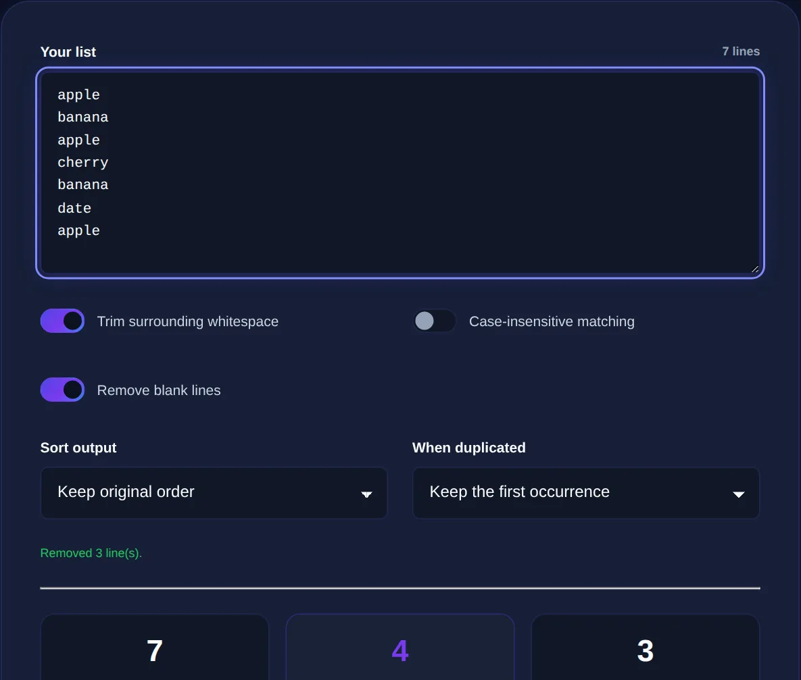

How to Remove Duplicate Lines from a List Instantly
Why duplicates creep into lists, how automatic de-duplication works, and how to clean thousands of lines in seconds.
By Mubasher Hussain · Published 2026-07-28 · Updated 2026-09-01 · 1044 words · about 5 minute read
Duplicate lines are the junk that accumulates in any list you build over time: an email list stitched together from several exports, a keyword list copied from three tools, a set of URLs pasted from different pages. Removing them by hand is miserable and error-prone. Removing them automatically takes one click, paste the list, and the Remove Duplicate Lines tool returns only the unique lines, in seconds, entirely in your browser.
This article explains where duplicates come from, how automatic de-duplication decides what counts as a duplicate, and the options, case sensitivity, trimming, sorting, that make the difference between a clean result and a frustrating one.
Why duplicates creep in
Duplicates are rarely deliberate. They appear when you merge two sources that overlap, when a copy-paste repeats a block, when an export includes the same record twice, or when the same value is entered with tiny variations. The insidious part is that near-duplicates, "john@site.com" and "John@site.com " with a trailing space and a capital, look identical to a human but are treated as different by a naive comparison. Good de-duplication has to account for that.

How automatic de-duplication works
At its simplest, a de-duplicator reads your text line by line, remembers every line it has already seen, and keeps only the first occurrence of each. Everything after the first copy of a line is dropped. That basic behaviour is enough for clean data, but real lists need a few options to handle the messiness described above:
- Trim whitespace so "apple" and "apple " are treated as the same line.
- Ignore case so "Apple" and "apple" collapse into one.
- Sort the result alphabetically or numerically, which also groups similar entries so you can eyeball what is left.
- Remove blank lines that would otherwise survive as a single empty "unique" line.
Turning these on or off depends on your data. For email addresses, ignoring case and trimming is almost always right. For case-sensitive identifiers or codes, you want case kept exactly as-is.
Removing duplicates collapses repeats within one list. Comparing two lists to see what each contains that the other does not is a different job, that is what a diff tool is for. Use the right one for the question you are asking.
Real jobs this solves
De-duplication is one of those quiet workhorses that shows up across very different tasks:
- Cleaning a mailing list before import so you do not email the same person twice
- Collapsing an SEO keyword list gathered from multiple tools into a unique set
- Removing repeated URLs before running a bulk check
- Tidying a CSV column pasted as plain text
- Counting how many genuinely distinct values a list contains
That last use is underrated: paste a messy list, remove duplicates, and the line count of the result tells you how many unique items you really have, often a surprise.
Order matters: dedupe, then transform
When you are cleaning data, the sequence of operations affects the result. As a rule, trim and normalise first, then remove duplicates, then sort. If you sort before trimming, stray whitespace can scatter entries that should sit together. If you dedupe before normalising case, you will keep "Apple" and "apple" as two lines. A tool that lets you apply trimming and case-folding as part of the same pass avoids these ordering pitfalls.
Paste any list and get back only the unique lines, with options to ignore case, trim spaces and sort. Everything runs locally in your browser.
Working with structured data
If your "list" is really a column from a spreadsheet or a CSV, de-duplicating the raw text is a fast first pass, but for anything relational you will eventually want structure. Once the column is clean, a CSV to JSON converter can turn it into data your code or another tool can use. And if you are trying to reconcile two lists rather than clean one, reach for the Text Diff Checker to see exactly which entries differ.
The takeaway
Duplicates, privacy and large lists
There is a privacy angle to de-duplication that is easy to overlook. The lists people most need to clean are often the most sensitive: customer email addresses, subscriber exports, lists of usernames or internal identifiers. Pasting those into a random online tool that uploads them to a server is exactly the kind of quiet data leak that causes trouble later. A de-duplicator that runs entirely in your browser processes even a very large list locally, so thousands of email addresses never leave your machine.
Performance matters at scale too. Removing duplicates from a handful of lines is instant everywhere, but a genuinely large list, tens of thousands of rows, is where a well-built tool shows its worth by staying responsive. Because the work happens on your own device, there is no upload wait and no file-size limit imposed by a server; the only constraint is your browser's memory, which comfortably handles lists far larger than most people ever need to clean. That combination of privacy and local speed is the main reason to prefer an in-browser deduper over a server-based one.
The habit worth forming is to dedupe early and often. Every time you merge two sources, two exports, two copied blocks, two colleagues' lists, run the combined result through de-duplication before you do anything else with it. Duplicates are cheapest to remove at the moment they are introduced and most expensive to untangle after they have propagated into a mailing, a report or a database. A quick paste-and-clean the instant lists come together saves the far larger headache of chasing down why the same person got emailed twice or why a count came out wrong.
Duplicates are inevitable whenever lists are built from more than one source, and cleaning them by hand does not scale past a few dozen lines. Paste your list into Remove Duplicate Lines, turn on trimming and case-folding if your data needs it, and you will have a clean, unique set in seconds, with the original never leaving your device.